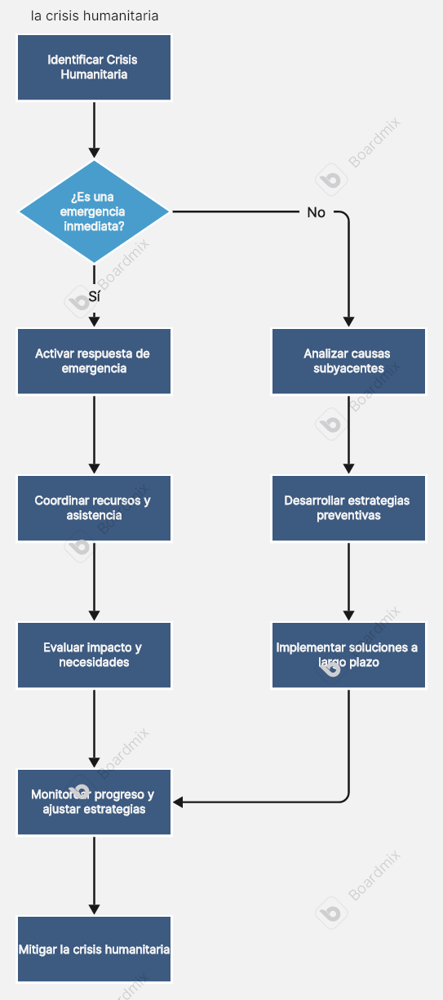

Resumen Histórico
Esta línea de tiempo muestra los eventos clave en el desarrollo de la crisis humanitaria, desde sus antecedentes hasta la situación actual. Sirve como una herramienta visual para comprender la evolución de los factores implicados.
LÍNEA DE TIEMPO
